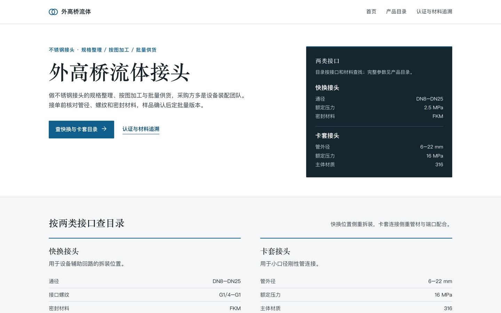
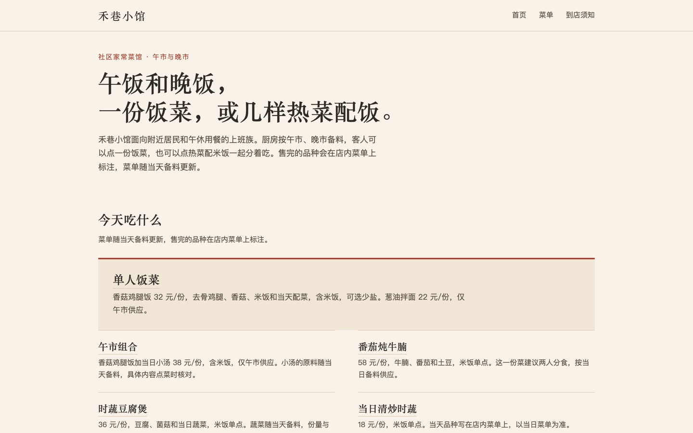
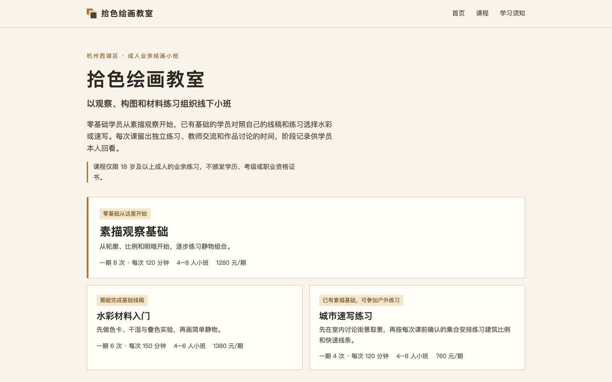
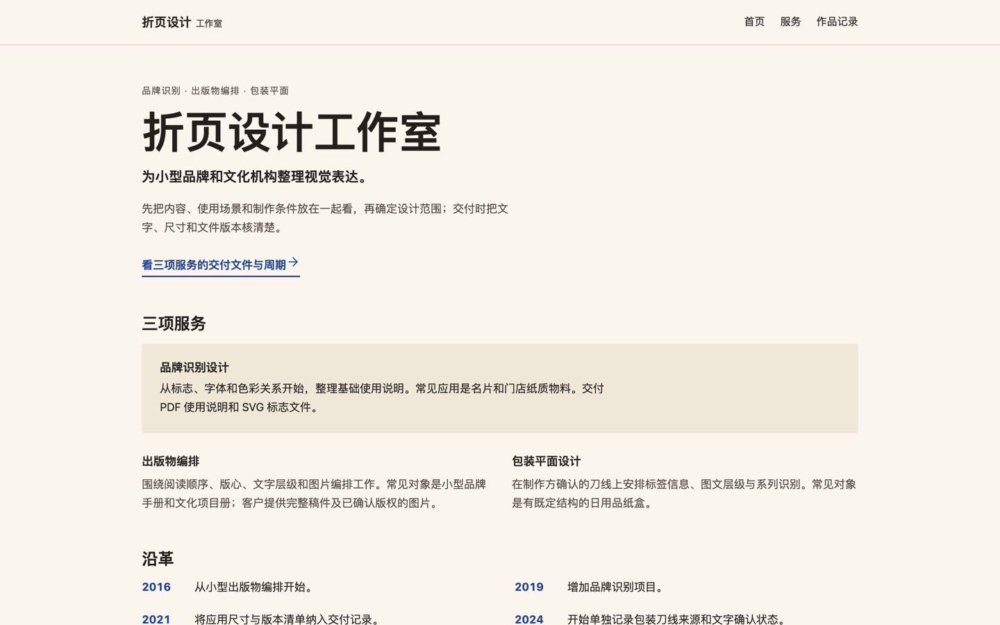

把公司资料，
写成它自己的官网。
上传公司介绍、价目表或产品说明，也可以直接描述想要的网站。选一种风格，SiteCraft 写出一套多页展示型官网；不满意的地方，在对话里说，或在预览上直接批注。
从资料到网站
流程是固定的，内容和版式按每家的资料来定。资料少，网站就做得少；之后补充资料，再接着丰富。
给资料
上传文档，或者用几句话说明公司做什么、想放哪些页面。点名要的页面，资料撑不起来时会直接说明，不拿空壳凑数。
对齐风格
开写之前先确认方向：选一种主风格，再用两个滑杆调版式和疏密，也可以交给「帮我选」按资料挑。滑杆只改变排法，不增删内容。
生成整站
先列页面大纲，再逐页写出 HTML 和样式，检查修正后存成第一个版本，带公共页头页脚。
对话和批注修改
在对话里提要求，或者在预览上点选、圈选某一块写下意见，几条一起发送。改动只落在选中的区块，其余页面保持原样。
版本撤销与恢复
每次修改都存成完整版本。撤销就是回到旧版本，刷新页面也会从当前版本接着来。
英文版
中文站定稿后，可以再生成一份英文版，沿用同一套结构，只翻译文字；数字、型号、邮箱和网址逐项核对，不会在翻译中走样。
站点打包下载
把当前版本下载成一个静态站点包：每页的 HTML、样式、实际用到的图片，以及一份图片许可说明，可以直接放到自己的服务器上。
同一套流程，五种样子
下面几份样品，行业和风格各不相同，都是从已生成的站点里挑出来的。点开截图，可以在新标签页里翻完整网站；它们就是系统导出的站点包，原样放在这里。公司与店铺都是模拟资料，并不存在。




存版本之前，先过底线
生成、对话、批注、恢复，所有改动都走同一个入口。没通过的会交回去修，最多两轮；仍然不过，就如实告诉你卡在哪里。
- 价格、时间、资质、承诺、效果、客户与评价，必须能在你给的资料里找到原句；找不到就留作「待补充」，不替你编。
- 页面里没有脚本、外部资源、未授权图片和空链接。
- 在手机、平板、电脑三种宽度下检查：不横向溢出、不互相遮挡，正文对比度足够看清。
用你自己的模型接口
在建站工作台的设置里填上 API 地址、key 和模型名，它们只保存在你的浏览器里；站点、版本、对话和上传的资料同样存在你的浏览器。服务器只在处理这一次请求时用到 key，不保存。目前只保证 DeepSeek 兼容接口可用。